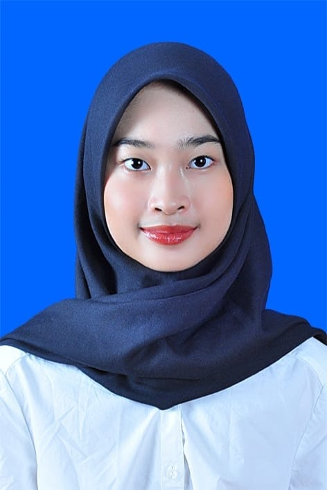
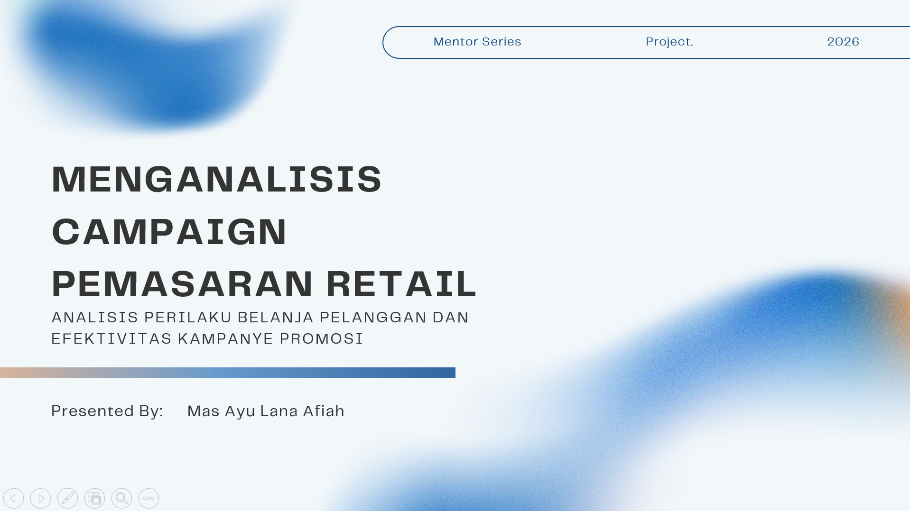
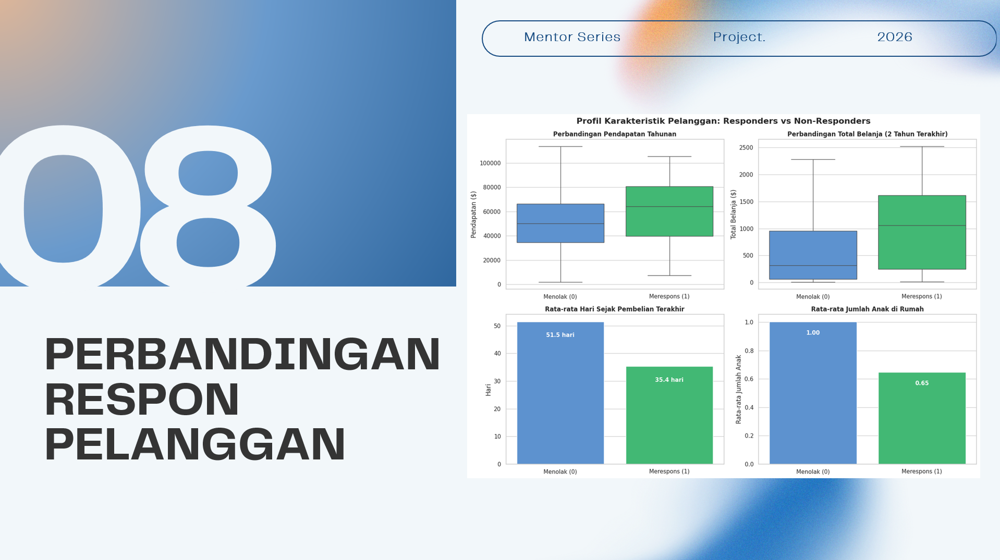
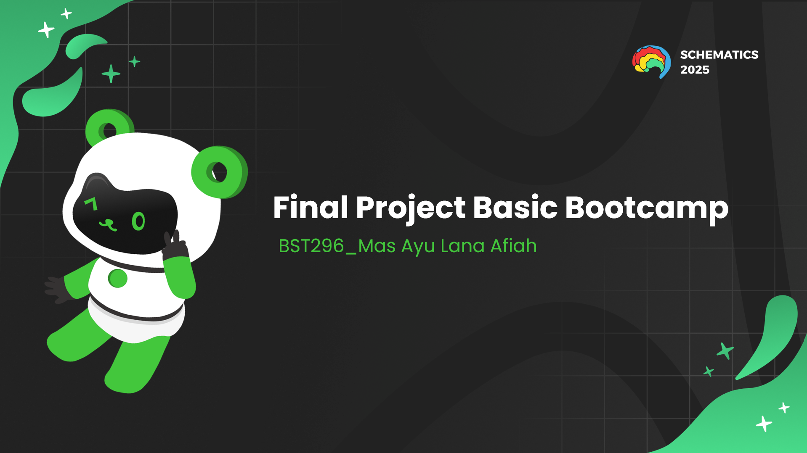
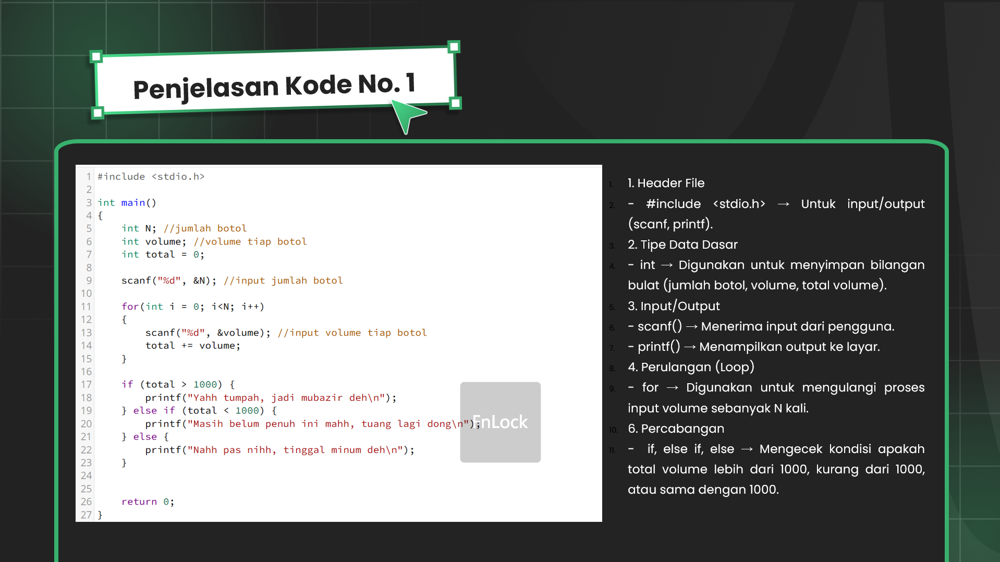

Saya Mas Ayu Lana Afiah, mahasiswa tahun pertama Jurusan Teknik Informatika di ITS. Saya tertarik pada teknologi, matematika, dan data. Senang menghadapi tantangan baru dan tertarik mengikuti kegiatan pengembangan diri. Saat ini, saya fokus pada memperkuat akademik dan mengembangkan soft skill dan hard skill, terutama dalam inovasi teknologi. Saya siap berkontribusi dan memberikan impact baik bagi masyarakat dan lingkungan sekitar.
Teknik Informatika - Institut Teknologi Sepuluh Nopember
SMA Negeri 6 Surabaya
| Mei 2026 - Sekarang |
Schematics 2026 - Staff Data ManagementMenjalankan tugas bersama 24 rekan mahasiswa. Mencatat database semua peserta dan menghubungkan antara peserta dan panitia pada setiap sub event yang menghadirkan peserta dari berbagai daerah di Indonesia. |
| Juli - Agustus 2026 |
ITS CAMP 2026 - Staff Data CenterBertugas mencatat penugasan, absensi, dan penilaian seluruh mahasiswa baru ITS dan menjadi penghubung antara mahasiswa baru dengan panitia lainnya. |
| September 2025 - Februari 2026 |
UKM TDC ITSOrganisasi minat bakat yang bergerak di bidang kewirausahaan. Memberdayakan mahasiswa untuk menavigasikan diri dan belajar sebagai pemimpin bisnis di masa depan. |
Analisis DatasetFinal project pelatihan Data Analyst, mencakup proses Exploratory Data Analysis (EDA), pembersihan data (data cleaning), hingga analisis perilaku pelanggan (customer analytics) menggunakan Excel dan Python untuk menghasilkan insight yang dapat mendukung pengambilan keputusan bisnis. |
  |
Final Project Bootcamp C/C++Pelatihan dasar pemrograman menggunakan bahasa C dan C++, mencakup algoritma serta logika pemrograman. Pelatihan ini disertai latihan soal dan studi kasus pada tiap pertemuan untuk memperkuat pemahaman konsep dasar coding. |
  |